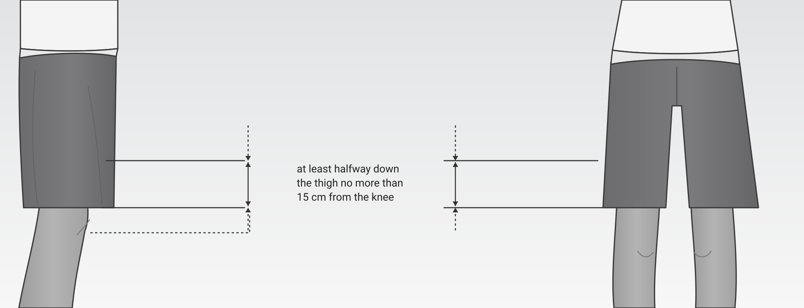

What changes in 2027
Allowed colours by belt
White belt
Shirt predominantly white (over 50%). Only secondary colour: black (under 50%).
Coloured belts
Black, white or black-and-white shirt with at least 10% in the belt colour, visible front and back. 100% belt colour also allowed.
Black belt
Shirt predominantly black (over 50%). Only secondary colour: white, plus a small red area (no fully red sleeves).
Rash guard: general rule
Elastic, body-fitting shirt long enough to cover the waistline of the shorts. No other colours allowed except team/brand logos.
Photo examples by belt
Tap a photo to enlarge. Illustrations are examples only.


Shorts

Length: not past the knee; hem at most 15 cm above mid-knee. Kids: must cover at least half the thigh.
Colours: black, white, black-and-white and/or belt colour; no pockets (or sewn shut), buttons, exposed cords, zips or plastic/metal parts. Compression shorts/leggings underneath allowed in the same colours.